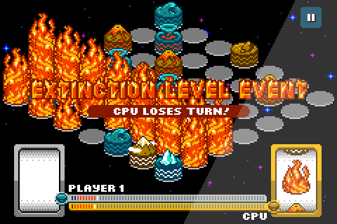

Horror Vacui 2
A Game by Shaun Inman © 2010
Available in the App Store Available in the Mac App Store

Get it to go on the iPhone 4, iPod touch & iPad
Get it for your Mac Pro, Mac mini, iMac, MacBook, MacBook Air & MacBook Pro
Horror Vacui is a two-player abstract strategy board game for the iPhone, iPod touch, iPad, and Mac!
Two players, Water and Earth, take turns placing pieces on the board. The temperature of each piece affects adjacent pieces. The player with the most normal temperature pieces when the board is full wins!
Helpful Tactics
- Keep your opponent on their toes with Hot and Cold pieces.
- Try to Normalize as many of your own pieces as possible.
- No good moves? Sacrifice a Hot or Cold piece to Normalize another.
- Watch out for the devastating Inferno and Ice Age Extinction Level Events!
New in Horror Vacui 2
- Same engaging strategy
- New dexterity-based reels and familar luck of the draw cards
- Two board sizes for longer or shorter play times
- All new 8-bit isometric graphics
- Unique temperature and element animations
- Expanded and remixed 8-bit music plus all new sound effects